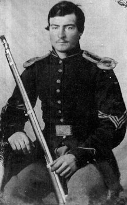

|

NAME: John Williamson
BORN: 1839
DIED: 1862
ALLEGIANCE: Union
HIGHEST RANK: Sergeant
UNIT: 81st Pennsylvania Volunteer Infantry, Company K
RECORD: Mustered in as a sergeant on October 15,
1861. Fought in the May 31-June 1, 1862, Battle of Seven
Pines (Fair Oaks). Killed in the Battle of Glendale (White
Oak Swamp, Charles City Crossroads) on June 30, 1862.
|
|
The day after 22-year-old John Williamson got married,
Confederate forces fired on Fort Sumter in South Carolina's
Charleston Harbor, sparking the Civil War. For Williamson,
whose life was just beginning to bloom, it was a bad omen.
War held an exciting allure for thousands of young men in
the North and South. Many of Williamson's friends and
relatives from Luzerne County, Pennsylvania, were joining
the Union army. Williamson, whose profession as a mule
driver was anything but glamorous, thought about it too, but
he had a new bride, and his first child was on the way.
However, after just a few months with his wife, Hester, the
young Pennsylvanian reluctantly decided that he had no
choice but to enlist. In September 1861, he joined Company K
of the 81st Pennsylvania Infantry as a sergeant. He was
mustered into Federal service the next month.
That winter was a miserable one for Williamson and all the
other men quartered at Camp California, outside Washington,
D.C. Sickness sent several men to the hospital and others to
their graves. Fever temporarily incapacitated Williamson,
but he got through it. Letters from his wife helped.
As the Union and Confederate armies began to stir in the
spring of 1862, Williamson received news of the birth of his
child, a girl named Matilda. Even as his regiment tangled
with Rebels in the Battle of Seven Pines at the end of May,
the sergeant worried about his infant daughter. In letters
to his wife he described the "hard sight" of the dead on the
battlefield, while seeking reassurance that the "whooping
cough" that had broken out back home had not affected young
Matilda.
On June 30, as the Seven Days' Battles were grinding to a
conclusion on Virginia's Peninsula, Pennsylvania troops got
involved in a heated fight with Confederate troops at
Glendale. Williamson was killed, and his body was never
recovered. The young sergeant, who had always signed his
letters home "your affectionate husband till death," had
kept his word, but far too soon.
Source: Civil War Times Illustrated
39:4 (August 2000), 80.
|